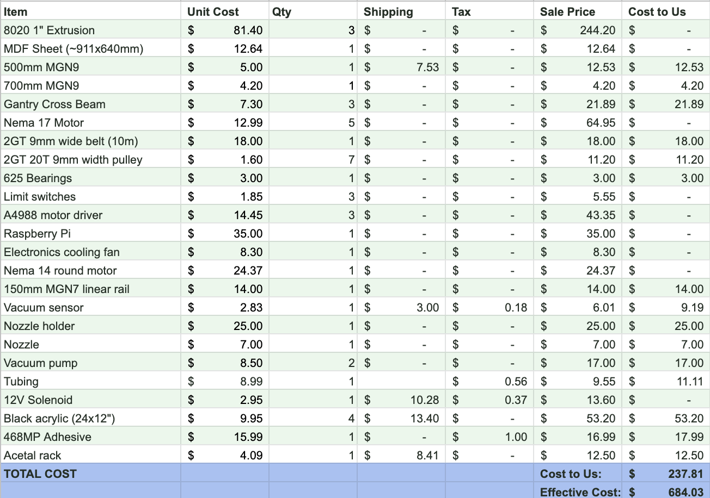

Process
Sprint 1: Planning
In sprint one, the team held many meetings to go over project ideation and logistics. The most important result of this sprint was a clear vision of what the project would look like and a solid understanding of the steps required to reach our goal. As a learning exercise, we mounted a single stepper motor to a piece of wood and used this to get acquainted with various motor control software. In addition, software was developed to handle the conversion of images to binary arrays which we knew we would need later when plotting images with the gantry.
Sprint 2: Scrappy Gantry
With a well thought-out high-level system architecture, the mechanical team jumped directly to designing the final gantry system in CAD. The design philosophy was that we would only design and manufacture the gantry frame once and then reuse it across two different prototypes. Therefore, extra considerations were made when designing the frame to allow it to be fitted with two completely different motion systems. At this time, we compiled an extensive bill of materials and placed an order for all the components we would need for the final gantry. While waiting for the components to arrive, the frame was fabricated with material that we had acquired. Then the gantry was fitted with the scrappy motion system which relied on parts that we already had on hand such as v-wheels, 6mm timing belts, and pulleys. Basic software was written to demonstrate control of the gantry across the x and y axis and more development was put into the back-end programs that enabled us to feed individual binary frames to the gantry to be plotted.
Sprint 3: Software Integration
As planned from the beginning, the first task for the 3rd spring was to upgrade the scrappy gantry with the high-quality components such as linear rails (to replace the v-wheels), thicker timing belts, and custom machined mounting plates. After this was complete, the remaining time was spent on software integration and testing. A lot of work was done to eliminate potential reliability issues across all aspects of the system. By the end of this sprint, we had achieved our MVP goals of being able to manipulate tiles (picking, placing, moving, and flipping).
Sprint 3.5: Testing & Final Touches
In the final days of the semester, we completed the last remaining mechanical projects such as cable management, tile manufacturing, and reliability testing. We also worked on finishing the software to allow for initial grid placement, still image rendering, and even animated rendering. We then performed an extensive testing campaign where we were able to demonstrate the ability to render a complete frame with no failures of any kind. We then moved on to rendering a simple 24-frame animation.
Bill of Materials
The complete bill of materials is pictured below. Many of our more expensive components were sourced from existing personal stock or Olin resources. For all components that do not have a "cost to us," we estimated the cost by searching the components online.
